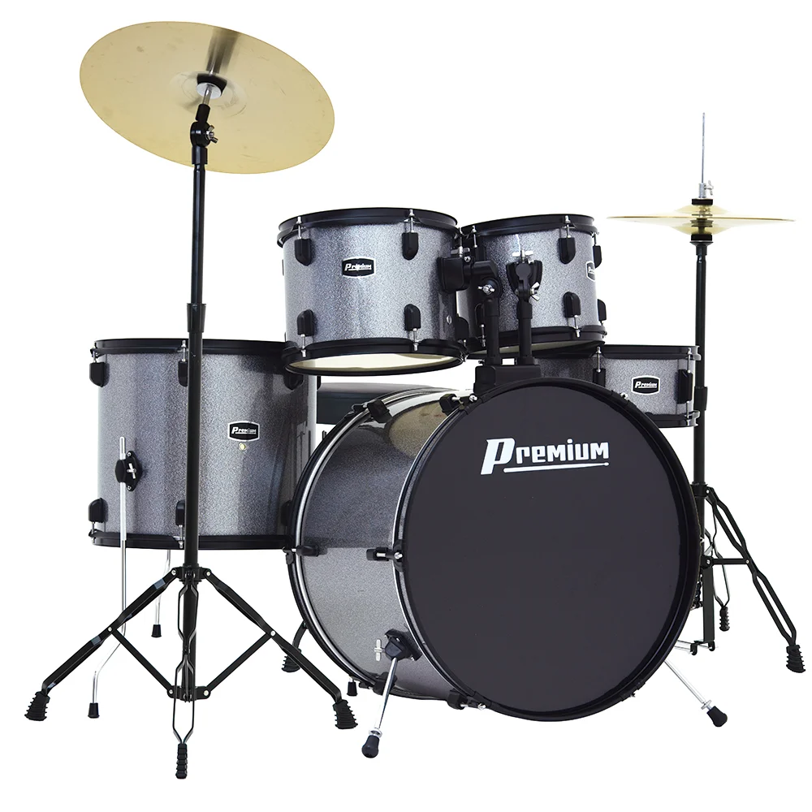

Derek Oliveira
About my country
I'm Brazilian and I live in Brazil, the largest country in South America and the fifth largest in the world by both area and population. It's a country of continental size, with landscapes ranging from the Amazon Rainforest to the coastal beaches, and including the Cerrado savanna and the Serra da Mantiqueira mountains.
About me

One of my favorite hobbies is playing drums. I started learning the instrument because I loved the rhythm and energy it brings to any song, and today it's one of my favorite ways to unwind after a busy day.